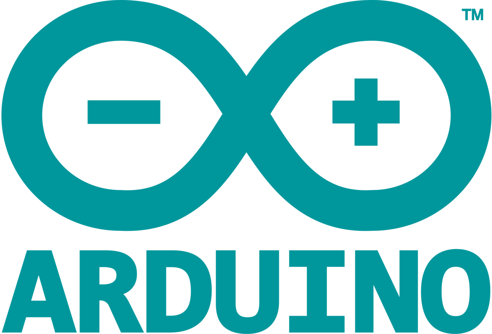
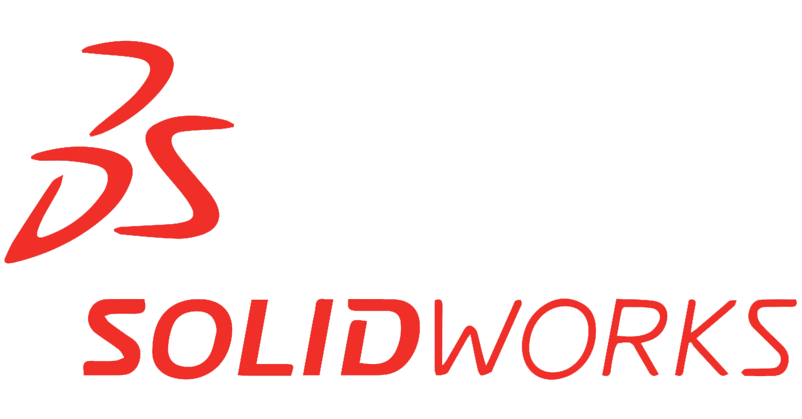

Tecnologías que utilizo
 


Sistema guía para personas con discapacidad visual.
Tecnologías: Arduino, C++.
Ver Proyecto
Sistema de digitalización de temperaturas, tomadas de termocuplas tipo T.
Tecnologías: Arduino, C++.
Ver Proyecto
Permite la visualizacion de las temperaturas tomadas por el tablero TC1
Tecnologías: Java.
Ver Proyecto
Consiste en capturar monedas generadas al azar para avanzar de nivel.
Tecnologías: Unity, C#.
Ver Proyecto